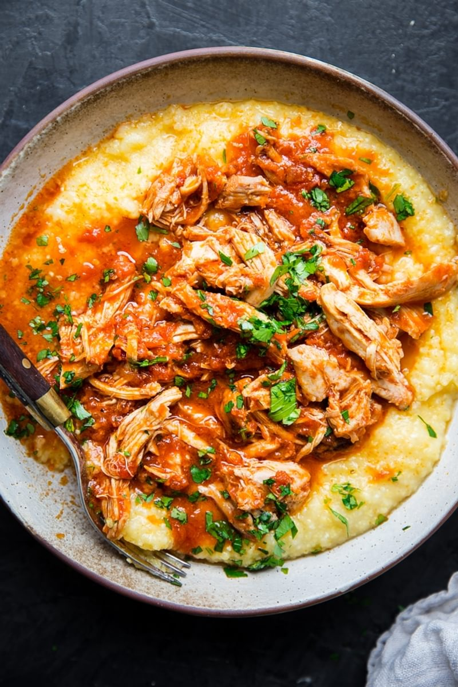

How To Make Instant Pot Chicken Marinara

Plug in that Instant Pot and carve out 20 minutes—dinner's almost ready.
- Dump the salted chicken thighs and tomato sauce into your Instant Pot.
- Cook on high for 5 minutes.
- Let the pressure release naturally for 10 minutes.
- Shred the chicken thighs in the sauce, and serve!